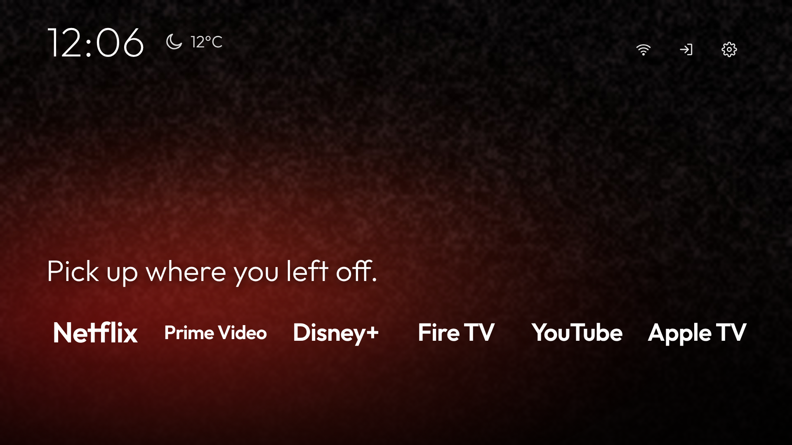
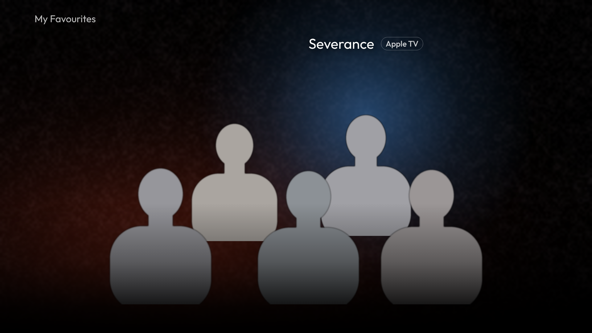
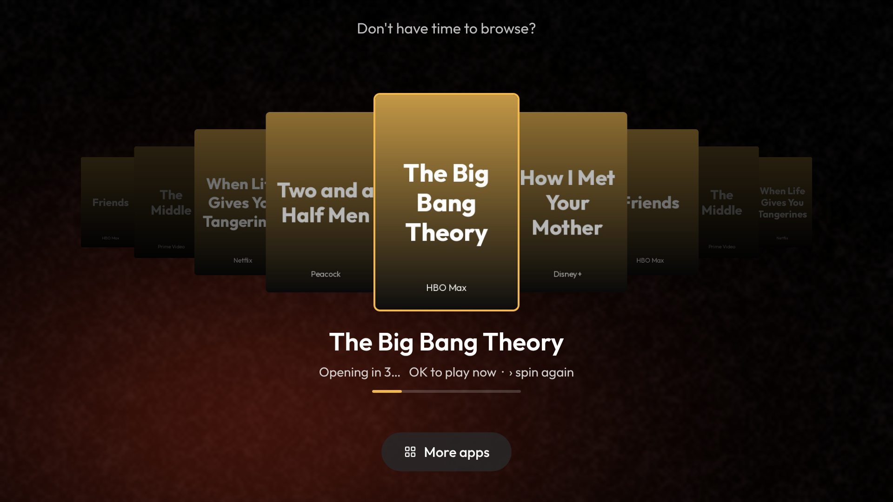
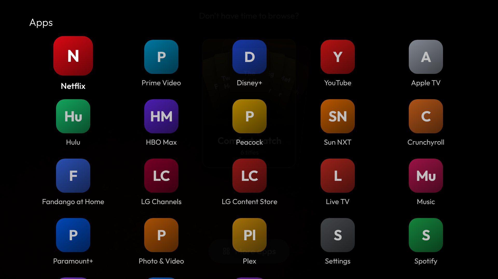
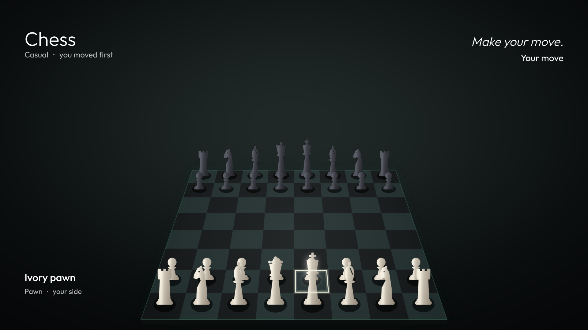

192.168.1.20) and the passphrase (6 characters, for example A1B2C3) shown on screen.Go to github.com/bharycr7/tv-home-lg, click Code → Download ZIP and unzip it. If you use git, run git clone https://github.com/bharycr7/tv-home-lg instead.
Keep the TV on with Key Server ON. Open a terminal in the project folder and run the command for your computer, using your own IP address and passphrase:
Mac / Linux (Terminal)
cd tv-home-lg ./scripts/install.sh 192.168.1.20 A1B2C3
Windows (PowerShell)
cd tv-home-lg Set-ExecutionPolicy -Scope Process Bypass .\scripts\install.ps1 -TvIp 192.168.1.20 -Passphrase A1B2C3
The installer sets up LG's tools (@webos-tools/cli), connects to the TV, builds the app and installs it. TV Home then opens on your TV, and you'll find it in your apps as TV Home.
.ipk from the GitHub Releases page, then run:npm install -g @webos-tools/cliares-setup-device -a lgtv -i "host=TV-IP" -i "port=9922" -i "username=prisoner"ares-novacom --device lgtv --getkey (type the passphrase when asked)ares-install --device lgtv com.tvhome.lg_1.0.0_all.ipkLG doesn't let any app take over the Home button, so set up one of these shortcuts:
| Button | What it does |
|---|---|
| Up / Down | Move one row: top icons, dock, My Favourites (two rows of characters), mood cards, More apps, chess. |
| Left / Right | Move along a row. On a mood card, Left means nope (next mood) and Right means yes (spin). |
| OK | Open the app, show or input. During the countdown, OK opens the show now. |
| Back | Return to the dock. Back again leaves TV Home. |
| Play / Pause | Turn the background music on or off. |
Everything you'd want to change is in two files: app/config.js (apps, lines, moods, weather, music) and app/data.js (your favourites and the titles in each mood). After editing, run ./scripts/update.sh on Mac or Linux, or the install script again on Windows.
| To change | Do this |
|---|---|
| Wallpaper | Replace app/img/wallpaper.jpg with your own 1920×1080 image. |
| Dock apps | Edit dock in config.js. Each entry is an app (svc) plus one or more lines of text. To show a logo instead of the name, add a white PNG to app/img/icon/ and set icon. |
| HDMI tile | ps5Hdmi sets the HDMI port it switches to. Its name sets the label, for example "Fire TV" or "PS5". |
| Weather | weather.unit: 'celsius' or 'fahrenheit'. Add lat and lon to fix the location. |
| Background music | Copy your own song to app/audio/bgm.mp3. |
| New Tamil & Malayalam titles | Set freshFeed: true. A mood card then refreshes itself weekly with new titles on US streaming services. |
pip install "rembg[cpu]" pillow, then python3 tools/make-cutout.py photo.jpg fav1. It saves cast_fav1.png and a black-and-white copy.data.js, edit that entry in shows:
title: the show's name.app: one of netflix, prime, disney, hulu, appletv.target: the show's link or ID.box: where the character stands, as fractions of the group frame (left, top, right, bottom).lane: 0 for the back row, 1 for the front row.glow: the colour of the light behind them.| App | What to put in target |
|---|---|
| Netflix | The number in netflix.com/title/70143836 |
| Prime Video | The amzn1.dv.gti.… ID from the title's page link |
| Disney+, Hulu, Apple TV | The full web link to the title |
A free site like JustWatch shows which service streams a title in your country and links to it.
Add a mood in moods (config.js) with an id, a name and a colour. Then add titles to titles in data.js with moods: ['your-id']. Put a poster at app/img/poster/<art>.jpg (300×450). Titles from apps that aren't installed on your TV are hidden automatically.
config.js and data.js stay as you set them.| Problem | Fix |
|---|---|
| "Failed to get ssh private key" | Key Server is off. Turn it ON in the Developer Mode app and run the installer again. |
| "All configured authentication methods failed" | The passphrase is wrong or has changed. Re-run the installer with the passphrase now shown on the TV. |
| The installer can't find the TV | Check that the TV and computer are on the same Wi-Fi and that the IP address matches the Developer Mode app. |
| TV Home won't open or looks frozen | Run ares-launch --device lgtv --close com.tvhome.lg, then open it again. |
| A show opens on the app's home page | Some apps ignore links from other apps on webOS. Choose your profile and search, or check the link in data.js. |
| A mood card is missing | None of its titles are on apps installed on this TV. |
| No weather | Weather needs the internet. It updates every 30 minutes while TV Home is open. |
| No music | Add app/audio/bgm.mp3 and reinstall, then press Play/Pause once. |